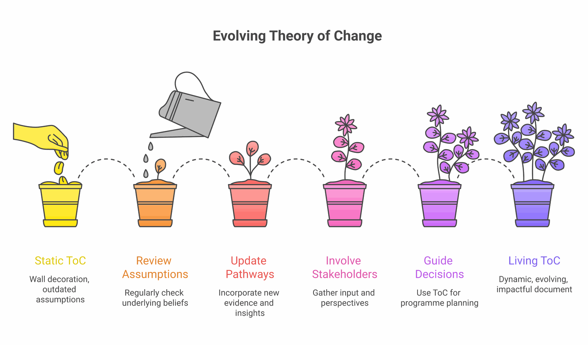

A Theory of Change (ToC) should be one of the most useful tools in a development practitioner's toolkit. The approach traces back to the evaluator Carol Weiss and the Aspen Institute Roundtable on Comprehensive Community Initiatives in the mid-1990s, who argued that complex programmes are hard to evaluate precisely because the assumptions that inspire them are poorly articulated. When done well, a ToC clarifies thinking, guides programme design, and provides a foundation for meaningful evaluation. Understanding its relationship to other frameworks like the logframe helps practitioners use it effectively. When done poorly, it becomes an expensive wall decoration—a diagram that looks impressive but doesn't actually inform decisions.
These failure modes are well documented. Isabel Vogel's 2012 review of Theory of Change use in international development for DFID—based on interviews with staff across 25 donor agencies, INGOs and research organisations—found that the same weaknesses surface again and again. Drawing on that literature and on ToCs we've reviewed across the South Asian NGO sector, here are five patterns that consistently undermine usefulness, and how to fix each one.

The "Everything Leads to Everything" Problem
The ToC diagram has arrows pointing in every direction. Every activity connects to every outcome. The visual looks comprehensive but is actually meaningless—it doesn't help you understand which pathways matter most or where to focus resources.
The Fix
Identify your main causal pathway first. Make it the spine of your ToC. Then ask: which additional connections are essential to understanding how change happens? Add only those. If everything connects to everything, nothing is clarified.
Missing or Magical Assumptions
The arrows in the ToC represent leaps of faith rather than tested logic. Training happens → behaviour changes. Seeds distributed → yields increase. The mechanisms that connect cause to effect are invisible or unexplained. This is the failure Weiss originally diagnosed, and the DFID review treats explicit assumptions as the feature that distinguishes a genuine ToC from a dressed-up activity list.
The Fix
For every arrow in your ToC, ask: under what conditions does this connection actually hold? Write down those conditions as explicit assumptions. Then assess which assumptions are already validated by evidence and which are untested hopes. Innovations for Poverty Action's Goldilocks guidance suggests prioritising the assumptions that are both most critical to success and most likely to be wrong.
Confusing Activities with Outcomes
The ToC is filled with things the organisation does rather than changes in the world. "Conduct 50 training sessions" is an activity. "Train 500 farmers" is an output. Neither tells us whether anything actually changed.
The Fix
Apply the "so what?" test. For each box in your ToC, ask "so what?" If the answer describes something your organisation does, it's an activity or output. Keep asking until you reach actual changes in knowledge, attitudes, behaviours, conditions, or systems. This activity–output–outcome discipline is the backbone of Funnell and Rogers' Purposeful Program Theory, still the standard reference on building rigorous programme logic.
The "Build It and They Will Come" Fallacy
The ToC assumes that creating something automatically means people will use it and benefit from it. A health facility is built, so health improves. A mobile app is developed, so farmers access information. The adoption pathway is invisible.
The Fix
Map the adoption pathway explicitly. From creation to awareness to access to uptake to sustained use to quality use. At each stage, ask: what could prevent people from moving to the next stage? What will we do about it?

The Frozen ToC
The ToC was created during proposal development, laminated for display, and never touched again. It doesn't reflect what the organisation has learned about what works, what doesn't, or how the context has changed. The DFID review is explicit that a ToC works best when it is kept flexible and revisited as a living model rather than fixed at the proposal stage.
The Fix
Schedule regular ToC review sessions as part of an adaptive management approach at programme milestones. Ask: what have we learned that challenges our assumptions? What pathways are working better or worse than expected? Update the ToC and document why changes were made.
"A theory of change is not a document to be filed. It's a hypothesis to be tested."
A Self-Assessment Checklist
Before finalising your ToC, run through these questions:
ToC Quality Check
Moving Forward
A good Theory of Change isn't about creating a perfect diagram. It's about forcing yourself to think clearly about how change happens and being honest about what you don't know. It should make your thinking visible so it can be examined, tested, and improved.
If your ToC is doing its job, it should occasionally tell you uncomfortable things: that a favourite activity isn't contributing to outcomes, that a key assumption is failing, that the pathway to impact is longer than you hoped. That's not a failure—that's learning. For complex programmes, these challenges are amplified and require even more deliberate attention.
ImpactMojo's Theory of Change course and interactive ToC Builder are designed to help you work through these challenges systematically. Because every practitioner deserves tools that actually help them think more clearly about creating change.